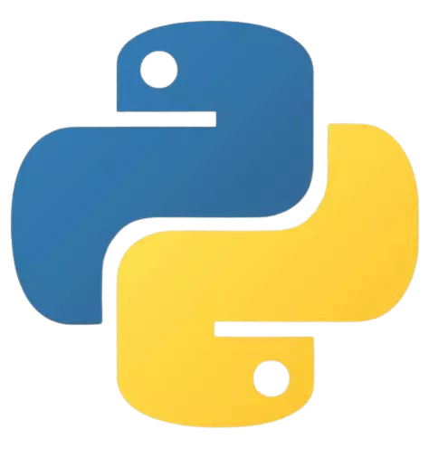
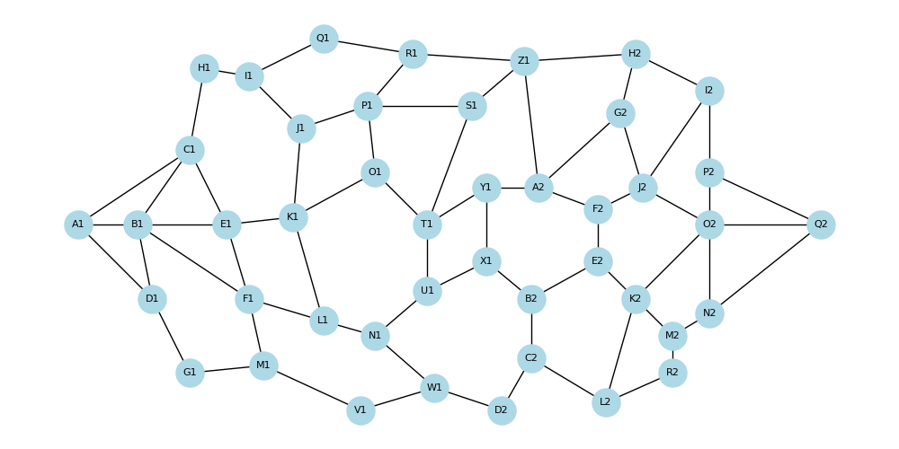
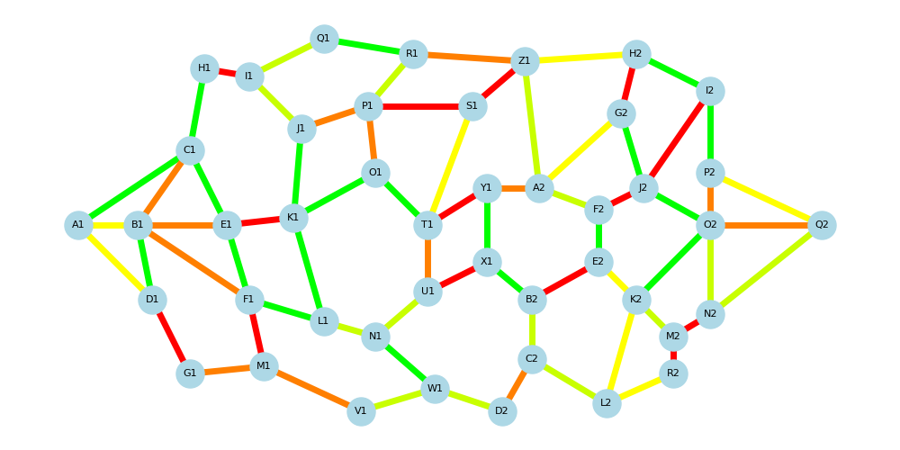
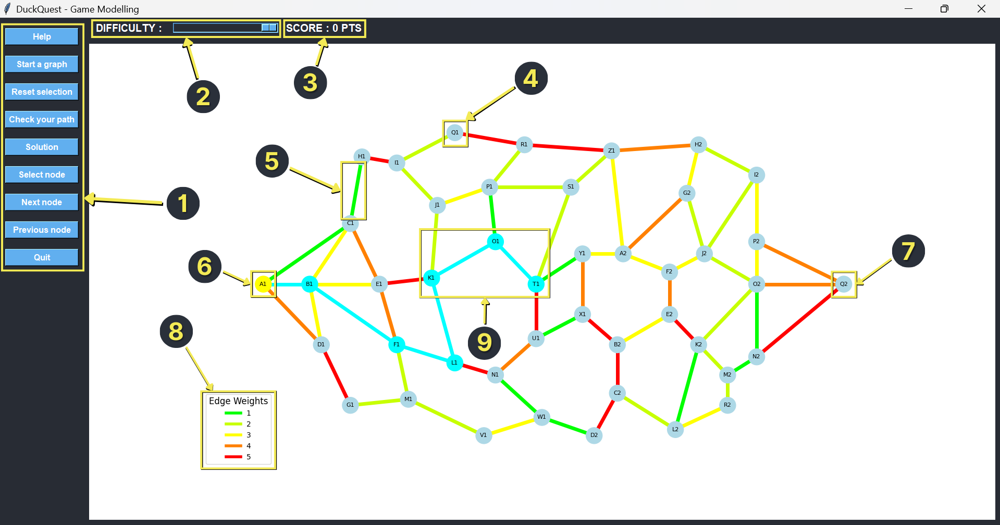
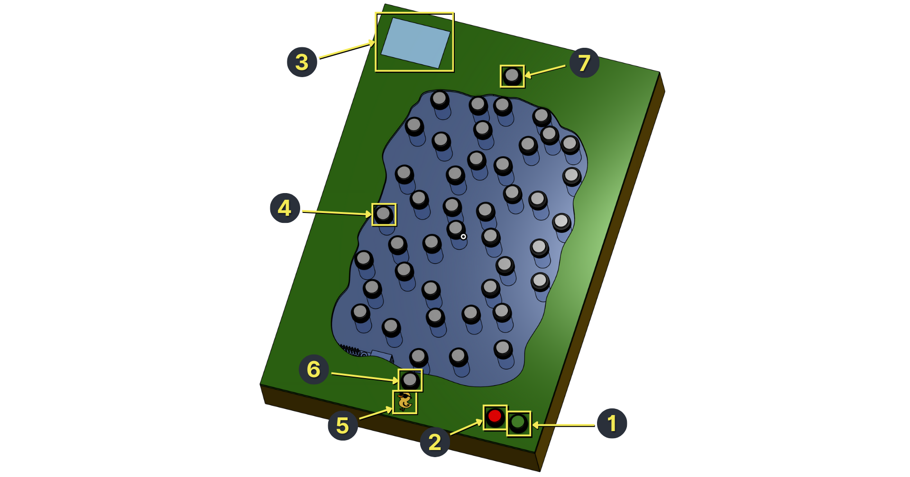

How It Works
Project Architecture
Using Python
DuckQuest is built using Python 3.11 and above. Python was chosen for its readability, its widespread use in education, and its powerful ecosystem of scientific and hardware-related libraries. In particular, its support for graph manipulation and GPIO control made it the perfect candidate.

Since one of DuckQuest’s core goals is educational accessibility, Python’s clear syntax and low entry barrier align perfectly with that mission.
Modular Project Structure
The project is organized into clean, independent modules. This modular design ensures maintainability, easy collaboration, and a smooth open-source experience. Each module handles a single responsibility. This separation allows each part of the project to evolve independently, and makes it easier for new contributors to understand the codebase.
Open Source
DuckQuest is designed as an educational project. Opening the code to the public allows teachers to adapt the game to their classroom needs, makers to experiment with their own hardware setups, and the community to improve and build upon the original idea. The project is released under the MIT license, which ensures maximum freedom to use, modify, and redistribute the software.
Graph and Algorithms
The DuckQuest Graph
At the heart of DuckQuest lies a physical, undirected, weighted graph with a fixed topology. Each node corresponds to a physical push button on the board, and each edge is represented by an LED strip that connects two nodes.

The graph is composed of:
- 44 nodes, named from A1 to Q2, using a letter–number system to maximize coverage while keeping a clear naming convention.
- 70 edges, each with a variable weight ranging from 1 to 5.
Edge weights are communicated visually using a color gradient from green (low cost) to red (high cost), allowing children to intuitively grasp the difficulty or “cost” of each path segment:
| Weight | Color | Meaning |
|---|---|---|
| 1 | Green | Fastest, most optimal path |
| 2 | Bright-Green | Still efficient |
| 3 | Yellow | Moderate path |
| 4 | Orange | Slower |
| 5 | Red | Longest, to be avoided |

Graph Theory Principles
Each play session in DuckQuest is, at its core, an exploration of a graph. The goal is to travel from a designated starting node (e.g., A1) to a fixed endpoint (Q2) by choosing a sequence of nodes that minimizes the total cost—that is, the sum of the weights of the edges traveled.
By experimenting and iterating, players naturally discover foundational concepts from graph theory:
- Paths and cycles
- Weighted costs and cumulative distance
- Optimal versus suboptimal choices
- Impact of local decisions on global outcome
The abstract ideas of graph theory are thus grounded in physical experience, transforming the learning process into an intuitive and playful activity.
Dijkstra’s Algorithm
To determine the optimal path between two nodes, DuckQuest uses Dijkstra’s algorithm, implemented via the networkx.shortest_path() function. The algorithm takes into account the edge weights and computes the least-cost path.
Dijkstra’s algorithm is used in two ways:
- To validate the user’s path: when the player finishes selecting their route, clicking the “Check your path” button triggers a comparison with the shortest possible path.
- To display the optimal solution: if the user requests help or wants to understand their mistake, the optimal path is highlighted on the graph using a distinct color (typically purple).
This algorithm is the core decision engine of the game, and its integration bridges the gap between computer science theory and hands-on gameplay.
Hardware Implementation
Core System: The Raspberry Pi
DuckQuest is powered by a Raspberry Pi 3B+, which serves as the central unit coordinating the game's logic, user interaction, visual feedback, and sound effects. This choice was driven by the board’s balance between GPIO availability, library compatibility, and affordability. The Pi provides enough computing power to manage real-time input from buttons, drive an addressable LED strip, play background audio, and run a graphical interface—all simultaneously and reliably.
Button Input System
At the heart of the setup, the Pi reads inputs from physical buttons, each mapped to a specific node in the game’s graph. These buttons are wired to GPIO pins configured in input mode, using the Raspberry Pi’s built-in pull-up resistors. When a player presses a button, the signal drops from HIGH to LOW, allowing the software to detect the interaction. This low-level wiring ensures quick response times and straightforward debouncing without the need for external components.
LED Output
Each edge in the graph is represented by a segment of an RGB LED strip (WS2812 / NeoPixel). These LEDs are individually addressable and connected in series, allowing the software to light them up based on the graph's structure and the player's current path. The LEDs are controlled using a specialized Python library, rpi_ws281x, which communicates with the strip over GPIO18—the only pin on the Pi that provides the required PWM signal with precise timing.
User Interaction
Graphical Interface
To make DuckQuest accessible even without hardware, a full graphical simulation of the board has been developed using Tkinter and matplotlib. This interface mirrors the physical layout of the board game and displays the nodes and edges in a clean, interactive window.
Each node is rendered as a clickable point, and edges are colored according to their weight—just like on the physical board. Players can simulate button presses, view the path as it is being constructed, and experiment with different strategies in a fully digital environment. A difficulty slider adjusts the distribution of edge weights, offering a way to scale the challenge dynamically.

- Buttons to modify, validate, or change the path
- Difficulty bar
- Score display
- Node
- Edge
- Starting node (A1)
- Ending node (Q2)
- Help legend explaining relation between weights and colors
- Example of a traced path (cyan)
Interactive buttons like Help, Start a graph, Reset selection, Check your path, and Solution provide full control over the gameplay. This interface was crucial during development and testing, and it now serves as an ideal fallback mode for classrooms without Raspberry Pi hardware.
Physical Interaction
When used with the real DuckQuest board, the game becomes a hands-on experience. Players physically press buttons mounted on the board to select nodes in the graph. Each valid selection adds the node to the current path and lights up the corresponding LED in cyan, creating a clear visual trail of the journey.

- Check your path button
- Reset selection button
- Screen displaying score and difficulty
- Node
- The Duck
- Starting node (A1)
- Ending node (Q2)
This interaction model is both tactile and intuitive. The player builds their solution step by step, with each choice made consciously, reinforcing the algorithmic thinking process. Once the destination is reached, a dedicated Check your path button triggers the evaluation phase.
Feedback and Learning
DuckQuest is designed to make learning algorithmic logic rewarding and engaging. After the player submits their path, the system compares it to the optimal path calculated by Dijkstra’s algorithm and provides immediate feedback.
The score is displayed as a percentage, based on how efficient the player's path was compared to the shortest possible route. In addition to this numerical score, the LED strip is used to visually reward the player: a green progression effect celebrates high scores, while redder tones reflect suboptimal paths. Sound effects, powered by Pygame, further reinforce the feedback loop, celebrating successes or prompting retries.
This combination of visual, auditory, and tactile feedback transforms what could be an abstract logic exercise into a game that feels alive, rewarding, and deeply educational. To keep the experience fresh, the game can regenerate new edge weights on each round, ensuring that the player faces a new challenge every time.
Development Workflow
IDE and Practices
DuckQuest was developed primarily using Visual Studio Code, with a lightweight and efficient setup. Key extensions such as Pylance, Python, and Black were used to ensure strong typing support, efficient linting, and automatic code formatting. The code adheres strictly to modern Python standards, with consistent 4-space indentation, single-line docstrings, and meaningful inline comments.
The project follows a clean Git workflow, based around a stable main branch. All commits use the Conventional Commits specification to maintain clarity and semantic meaning.
Tooling and Automation
Dependency management is handled using a combination of setup.cfg and pyproject.toml, which define the project metadata and build system. To address platform-specific constraints—particularly the fact that some Python packages only run on Raspberry Pi—a custom install.py script was written. This ensures that packages like RPi.GPIO and rpi_ws281x are only installed on compatible hardware, avoiding installation errors on unsupported systems.
A little CI pipeline is set up using GitHub Actions, which includes:
- Automated testing with pytest on each push and pull request,
- Code formatting checks to enforce Black-style formatting,
- Pre-defined templates for issues and pull requests to guide community contributions.
Testing Strategy
The project includes both automated and manual testing layers. Unit tests target the graph logic—checking pathfinding, score calculation, and user interactions—with full isolation via pytest fixtures. Manual tests validate the graphical interface (Tkinter) to ensure usability in both hardware and mock environments.
For hardware-specific components, the scripts/ directory contains several diagnostic tools, such as:
- hardware_checker.py to validate GPIO and LED strip wiring,
- led_strip_checker.py to demo animations and color mapping,
- button_checker.py for validating physical button connections.
All events, errors, and test outcomes are logged through a centralized logging system, which writes to both the console and a rotating log file.
Publication
DuckQuest is fully open source and hosted on GitHub, allowing anyone to explore the source code, track development progress, and contribute through pull requests and issue discussions. The repository includes complete documentation, test tools, and a modular codebase to ease onboarding for new developers or educators.
For broader accessibility, DuckQuest is also published on PyPI under the name duckquest, making installation straightforward using Python’s package manager.
All installation instructions, hardware notes, and environment-specific caveats are clearly outlined in the Get the Project section of the website.